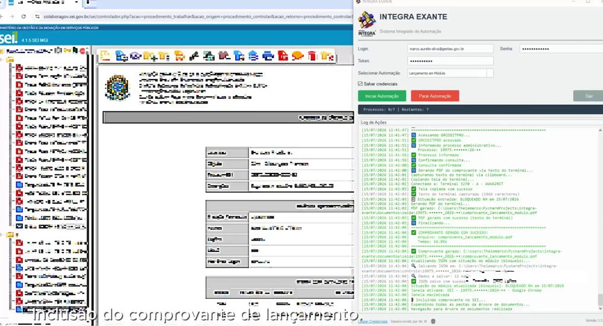
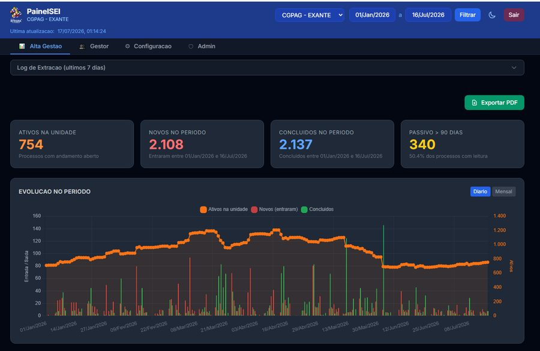
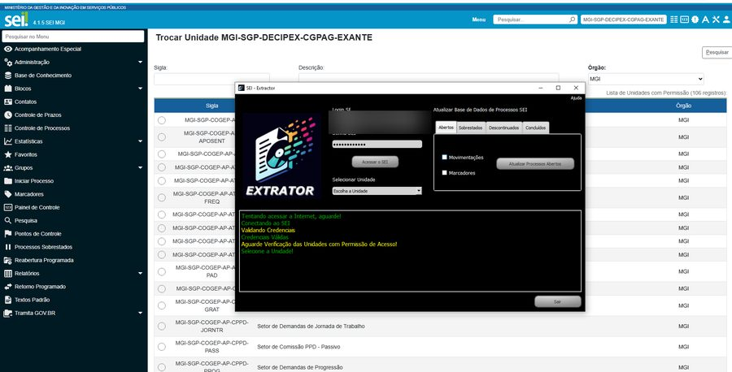
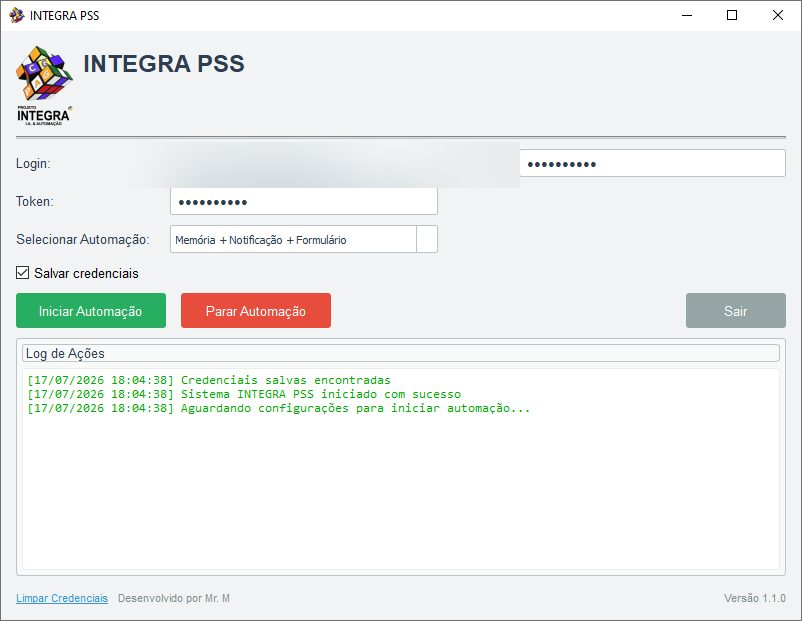

INTEGRA Exante — Exercícios Anteriores
O fluxo premiado: lançamento de exercícios anteriores conectando o SEI e o SIAPE (terminal 3270), da tabela de valores à nota técnica assinada.
Iniciativa da CGPAG · MGI / SGP
O INTEGRA nasceu na ponta, na CGPAG/DECIPEX, para tirar do servidor o trabalho repetitivo entre os dois sistemas. Virou caso publicado, e hoje o núcleo está em código aberto — para outro órgão replicar.
feito por quem vive o problema, para quem vive o problema.
Quem se aposenta muitas vezes não é reposto, e a demanda não diminui junto. Se a sua unidade recebe sempre o mesmo tipo de processo, alguém aí passa o dia lendo uma tela do SIAPE e redigitando o mesmo dado no SEI. Não é falta de capricho: é o desenho do trabalho. E, enquanto a fila cresce, quem mais entende do assunto é quem está digitando.
É a objeção mais comum, e a resposta não é um contra-argumento: é o tamanho do começo. A CGPAG/DECIPEX também não tinha equipe de TI — a automação saiu de dentro da própria área, feita por servidores que já faziam aquele trabalho à mão. No período, os técnicos na rotina de exercícios anteriores caíram de 8 para 4, e a outra metade foi para outras frentes. Ninguém foi contratado, e não há o que contratar: o núcleo é código aberto sob licença MIT — quer dizer que qualquer órgão pode baixar, usar e adaptar, sem pagar nada e sem pedir autorização a ninguém; basta manter o aviso de autoria. E você não precisa decidir nada agora: o primeiro passo é conhecer o que já existe e ver se alguma parte serve para o seu caso.
A página segue por mais quatro seções. Vá direto à sua.
O passivo de exercícios anteriores caiu de ~4.800 para ~800 processos; o tempo de cada processo, −89%; a experiência levou o 1º lugar nacional. Cada número com a sua fonte.
Por que o SEI e o SIAPE não se falam e o que a automação faz por dentro — e o que ela cobra: se a tela mudar, o roteiro quebra e precisa de conserto.
Os blocos que o pacote publica para o SEI, para o SIAPE e para a ficha financeira, sob licença MIT, e o que já roda na unidade com eles.
Uma conversa de diagnóstico sobre o seu fluxo e a indicação do caminho. Quem opera é a sua equipe, que conhece o órgão.
Números do artigo na revista Gestão de Pessoas em Ação (MGI), vol. 3, jun/2025, do Edital nº 1/2025 (MGI / Secretaria de Gestão de Pessoas) e dos registros agregados da CGPAG/DECIPEX — a seção de resultados traz a fonte de cada um.
Do outro lado não há empresa nem cliente: há servidores públicos que enfrentaram esse problema numa unidade e podem contar como foi, inclusive onde tropeçaram. O seu órgão tem equipe, restrições e regras que ninguém aqui conhece, e é você quem sabe onde o seu fluxo trava.
Podemos conversar pelo meio mais conveniente — vídeo, e-mail, WhatsApp — para ajudar a diagnosticar a necessidade e, se possível, colaborar para resolver.
Aconteceu na CGPAG/DECIPEX, entre mai/2023 e jan/2024. Os números desta seção saem do histórico de movimentações do SEI e dos registros agregados da unidade — sem informação pessoal — e cada um traz a sua fonte.
no tempo de cada processo: de ~32 min à mão para ~3,5 min com a automação.
Revista Gestão de Pessoas em Ação (MGI), vol. 3, jun/2025.
processos administrativos concluídos pela área no período.
Revista Gestão de Pessoas em Ação (MGI), vol. 3, jun/2025.
técnicos na rotina de exercícios anteriores — a outra metade da equipe foi redirecionada para outras frentes.
Revista Gestão de Pessoas em Ação (MGI), vol. 3, jun/2025.
A experiência da CGPAG/DECIPEX foi selecionada pelo MGI / Secretaria de Gestão de Pessoas e depois publicada como caso na revista da pasta.
Entre 2023 e 2026, a área recebeu 15.440 processos de exercícios anteriores — a demanda que a automação passou a absorver. As séries abaixo saem dos registros agregados da unidade.
Registros agregados da unidade, no início e no fim do período.
As medições são da mesma série, no início e no fim do período. Passivo é o estoque de processos ainda à espera de tratamento na unidade.
Em R$ milhões, por mês de lançamento. Total de R$ 12,11 mi em 304 processos, abr–jul/2026.
* o asterisco marca mês parcial. A soma dos meses exibidos difere do total por arredondamento: cada mês está arredondado a duas casas.
Fontes. Indicadores: artigo “Inovações Silenciosas em Gestão de Pessoas: automatizando atividades de trabalho repetitivas da DECIPEX”, revista Gestão de Pessoas em Ação (MGI), vol. 3, jun/2025. Séries: registros agregados da unidade. Reconhecimento: Edital nº 1/2025, MGI / Secretaria de Gestão de Pessoas. Todos os dados são agregados, sem informação pessoal.
O SEI tramita documentos na web desde 2009. O SIAPE guarda os dados funcionais numa emulação de terminal de mainframe — a tela preta 3270. Entre os dois fica o servidor: copiando, digitando e conferindo matrícula por matrícula.
Na ponta, o cenário é o típico do serviço público: demanda alta, equipe pequena e o mesmo ritual manual repetido à exaustão. Diante disso há dois caminhos, e nenhum deles é de graça. Quem for propor a automação à chefia precisa saber o preço dela antes de ser perguntado.
A CGPAG escolheu o segundo caminho com esse preço à vista: trocou um custo de repetição, que não termina nunca, por um custo de manutenção, que aparece quando um dos dois sistemas muda de tela. A troca vale onde o volume é alto e a regra é estável. Onde cada caso é diferente do anterior, ela não vale — e dizer isso antes do piloto custa menos do que descobrir depois.
A automação reproduz a interação do servidor na interface dos sistemas: não abre o banco de dados por trás, não pede integração privilegiada e não recebe credencial própria. É por isso que funciona em qualquer órgão, sem depender de habilitação institucional.
Roda sobre a mesma sessão logada do servidor. Nenhuma credencial de sistema, nenhuma liberação especial — o mesmo acesso de sempre, sem o trabalho braçal.
Fala com a API do editor de texto do SEI e busca arquivos por fetch dentro da sessão, em vez de simular mouse e teclado às cegas. É mais rápido e, sobretudo, previsível.
Cada módulo é conferido num SEI real — versão 4.1.5 — antes de ser publicado: processo criado, documento assinado, valor lançado. Só então entra no repositório.
Compara o que foi digitado com o registro oficial do SIAPE e aponta a divergência — como a matrícula trocada que antes travava o processamento.
Automação em serviço público só se sustenta com segurança e transparência. Os pontos abaixo são regra do projeto, não recomendação.
O INTEGRA oferece os blocos — a automação é de quem a executa. As rotinas montadas com os módulos do pacote são de inteira responsabilidade de seus executores: cada órgão observa as suas próprias regras de negócio, e a execução deve ser sempre acompanhada. São ferramentas de apoio ao andamento das unidades, e não constituem aplicações institucionais.
O coração do INTEGRA é uma biblioteca Python reutilizável, publicada módulo a módulo — cada peça generalizada, testada e verificada ao vivo antes de entrar. Nada de valores de um órgão embutidos no código: tudo é parâmetro.
Cada bloco faz uma coisa e devolve o resultado dela. Você escolhe quais usar — e monta a rotina do seu setor com as peças que interessam.
Do processo em branco ao documento assinado e tramitado.
A tela preta do mainframe, conduzida por código — com você autenticando.
As telas CIS do e-SIAPE conduzidas por código — com você autenticando pelo SERPRO ID no celular.
O PDF da ficha lido como dados — e a leitura se confere sozinha contra os totais impressos.
O projeto cresce em camadas: um núcleo público e auditável, um orquestrador que encadeia os passos, e as aplicações que rodam na unidade. Só a base é o que outro órgão precisa para começar.
A biblioteca de código aberto: os blocos de SEI e de SIAPE, reutilizáveis por qualquer órgão.
Encadeia os blocos em rotinas inteiras — catálogo de passos, fontes de dados e persistência.
Os fluxos da CGPAG/DECIPEX que instruem processo de verdade, no dia a dia da unidade.
Projetos construídos com o apoio dos blocos do pacote — cada um observando as regras do seu contexto. São ferramentas de apoio às unidades, não aplicações institucionais.

O fluxo premiado: lançamento de exercícios anteriores conectando o SEI e o SIAPE (terminal 3270), da tabela de valores à nota técnica assinada.

Lê a base de processos do SEI e mostra os indicadores da unidade quase em tempo real — ativos, entradas, conclusões e o passivo antigo —, com a evolução no período e exportação em PDF.

Acessa o SEI e atualiza uma base local dos processos da unidade — abertos, sobrestados e concluídos —, com movimentações e marcadores. É a base de dados que alimenta o Painel SEI.
Comunicação em lote, porém personalíssima: automatiza a Central de Mensagens do Sigepe com mensagem e anexo sob medida para cada servidor, em fases — captura, envio, comprovante no SEI, edital no DOU e encerramento.

Instrução dos processos de Reposição ao Erário, executando o fluxo “Memória + Notificação + Formulário” com a lógica headless do pacote — você autentica, a automação conduz.
Projetos internos construídos com o apoio dos blocos do pacote. As telas acima usam dados de demonstração — nenhum dado pessoal, nenhum processo real. O vídeo de execução do Exante já está publicado e abre nesta página.
O INTEGRA surgiu por iniciativa da Coordenação-Geral de Pagamentos (CGPAG), no MGI/SGP/DECIPEX. E o mesmo problema — SEI e SIAPE que não conversam — se repete em ministério após ministério, com cada unidade reinventando a roda, muitas vezes de forma informal.
O núcleo responde a isso sendo código aberto sob licença MIT, parametrizável por órgão e publicado abertamente. Um órgão pluga o seu SEI e o seu SIAPE sem começar do zero — e a colaboração entre órgãos é bem-vinda: o repositório aceita contribuição de servidores e de desenvolvedores de fora da DECIPEX.
Uma conversa de diagnóstico e a indicação do caminho: quais módulos servem para o seu caso, o que o seu órgão precisa ter antes de começar e onde isso costuma travar. Quem implanta, testa e opera depois é a sua equipe.
Escreva, ligue ou chame no WhatsApp — como for mais fácil para você. O que faz a conversa render é chegar com estas seis coisas em mãos, em texto corrido mesmo, na ordem que você quiser.
Não mande dado pessoal: nem CPF, nem matrícula, nem número de processo real. Descreva o caso com valores fictícios — é a mesma regra que vale dentro do repositório.
Não precisa ser da área de TI. Precisa ter o problema e ter o acesso.
Quem implanta, configura e opera é a sua equipe, que conhece o órgão por dentro — daí em diante a conversa segue se fizer sentido para os dois lados. Do outro lado há um servidor público com o próprio trabalho para tocar, não uma central de atendimento.
marco.aurelio-silva@gestao.gov.br
O endereço abre o seu programa de e-mail com o assunto preenchido; acrescente nele a sigla do seu órgão. O número recebe mensagem no WhatsApp e ligação, em horário de trabalho. E se você prefere não falar com ninguém agora, o caminho não depende disso: o núcleo está no GitHub sob licença MIT, com documentação e exemplos — clonar, ler e testar não passa por conversa nenhuma.
INTEGRA — iniciativa de servidores da Coordenação-Geral de Pagamentos (CGPAG) — MGI / SGP / DECIPEX.
Caso publicado na revista Gestão de Pessoas em Ação (MGI), vol. 3, jun/2025.
Ferramentas de apoio às unidades — não constituem aplicações institucionais.
Em construção · licença MIT · sem dados pessoais no repositório.
repositóriogithub.com/MarcoAShanon/integra-gov
contatoMarco Aurélio Silva
e-mailmarco.aurelio-silva@gestao.gov.br
telefone(24) 98849-3257